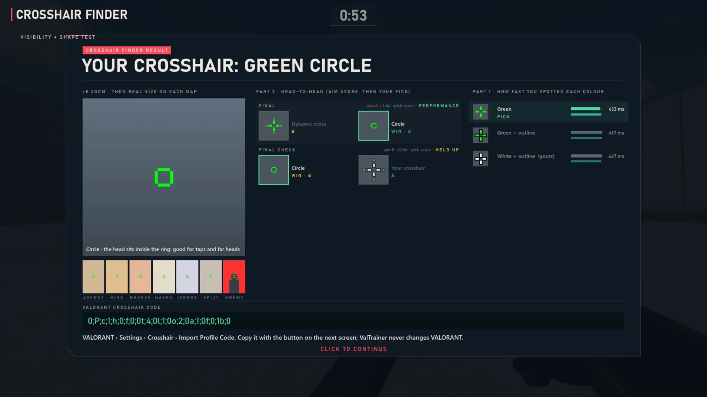

ValTrainer · Crosshair
VALORANT crosshair codes: pick, import and test a crosshair
A crosshair code lets you copy any VALORANT crosshair in seconds, which is why there are thousands of them online. The hard part is knowing which one you actually see and shoot best with. This guide covers how codes work, what makes a crosshair good, and how to test one properly, with or without ValTrainer.

What a VALORANT crosshair code is
A crosshair code is a short line of text that stores every crosshair setting: colour, outline, centre dot, inner and outer lines, and the movement and firing error options. Codes can also hold separate crosshairs for aiming down sights and for the sniper scope. Because the whole crosshair fits in one line, you can paste a friend's or a pro's crosshair instead of copying a dozen sliders by hand.
How to import a VALORANT crosshair code
- Copy the code (it looks like
0;P;c;1;h;0;...). - In VALORANT, open Settings → Crosshair.
- Choose Import Profile Code, paste the code and save it as a new profile, so your old crosshair stays one click away.
- Check it in the Range before a match: at close range, at long range and against a bright wall.
The same screen can copy your current crosshair as a code, which is the easiest way to back it up or share it.
What makes a good VALORANT crosshair
- Contrast first. Your crosshair sits on top of walls, sky and enemies all game. Pick a colour that stands out on the maps you play, and never the colour you use for enemy highlights (red by default), or it disappears exactly when it matters.
- An outline only if you need one. A thin dark outline helps on bright walls, but it also makes the crosshair bigger and busier.
- Small enough to see the head. A large crosshair covers far-away heads. A dot or a small cross leaves more of the target visible for precise taps.
- Error lines are a choice. Movement and firing error make the crosshair grow when you are inaccurate. Some players like that feedback, others turn it off because a growing crosshair can hide small targets. Either works; pick one and keep it.
- Consistency beats novelty. A new crosshair often feels better for a day simply because it is new. Your eyes and hands get used to one shape, so changing it every week costs more than it gives.
How to test a VALORANT crosshair
Testing beats scrolling through code lists. Compare two crosshairs at a time, on the same drill, with the same number of attempts, and on more than one day. In VALORANT you can do this in the Range or a custom game:
- Look at it on several maps, in bright and dark spots, and on an enemy model.
- Shoot far heads with single taps. A good crosshair makes it obvious when you are on the head.
- Play a deathmatch with each and note which one you lost track of, if any.
- Judge by results, not by feel. If you can't tell them apart, keep the one you already use.
Test crosshairs in real drills with ValTrainer
ValTrainer is a free aim trainer for VALORANT players. It reads your VALORANT settings files (read-only) and draws your crosshair pixel for pixel, including movement and firing error, with your own sensitivity and keybinds. For crosshairs it adds:
- A crosshair switcher. Scroll through every crosshair profile VALORANT saved on your PC, plus up to 20 codes you paste into ValTrainer. Use ◀ ▶ or the mouse wheel on the menu, the pause menu and Settings, or press , and . in a drill. Saved codes can be renamed, copied, reordered or deleted.
- The Crosshair Finder (about 6 minutes). Part 1 ranks colours and outlines by contrast against the maps and your enemy highlight colour, then times how fast you spot each one. Part 2 runs a bracket of shapes (dot, small cross, plus, circle, hollow square and more) in short rounds of flicks, far heads and a kill. Your aim decides, and the winner then faces your current crosshair.
- Primary, ADS or sniper. Test the tab you care about. The result is a complete VALORANT crosshair code that changes only that tab; paste it in VALORANT with Import Profile Code.
- A visibility warning in Settings → Crosshair and on the Lock-In screen when your crosshair is close to your enemy highlight colour or fades into common map colours.
- Copy any time: a COPY CROSSHAIR CODE button under the crosshair preview on the menu.
ValTrainer never changes VALORANT: you apply a new crosshair yourself. If your profiles live only in Riot's cloud and were never saved on this PC, the switcher shows just your current crosshair. Once your crosshair is sorted, the Sens Finder does the same blind, score-based test for your sensitivity.
Questions
How do I import a crosshair code in VALORANT?
Open Settings → Crosshair in VALORANT, choose Import Profile Code, paste the code and save it as a profile. The code changes only the crosshair, nothing else.
What is the best crosshair colour in VALORANT?
There is no single best colour. Bright green, cyan and yellow are common picks; choose one that stands out on the maps you play and is not your enemy highlight colour.
Can I test a crosshair code without changing my VALORANT settings?
Yes. Paste the code into ValTrainer (Settings → Crosshair) and switch to it in any drill. ValTrainer only reads VALORANT's settings files and never changes them.
Does a crosshair really matter?
A crosshair will not fix your aim, but one you can see clearly on every map makes small targets and crosshair placement easier. Once it is clear, stop changing it.
More guides for VALORANT players
Get ValTrainer
Free, open source, no account. Windows 10 and 11.
Download for Windows Install help
Or in a terminal: winget install Valtrainer.ValTrainer · Also on
itch.io · Questions? Discord